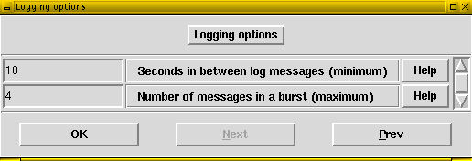

Issue #5, September 2006
Slack Notes: The Very Basics of Using Grsecurity
Author: Mikhail Zotov
Introduction
It is probably impossible to find a Linux user interested in security who haven't heard about grsecurity, a project maintained by Bradley Spengler. Essentially, grsecurity consists of a kernel patch (this is grsecurity by itself) and gradm, a userspace Role Based Access Control (RBAC) administration system. Here, we won't dig into depth of the project but will only "scratch the surface" by demonstrating how one can easily enhance security and privacy of a multi-user Linux system by just applying the kernel patch. The last section provides references for further reading and advanced using of grsecurity.
In what follows, we will focus on achieving the following goals:
- we will restrict users to allow them only view their own processes,
- we will introduce (pseudo-)randomness in process IDs and TCP source ports, i.e., we will enable a number of features implemented in OpenBSD for protection against certain classes of attacks,
- we will enable a number of other protections.
This is only a small fraction of what can be done with grsecurity. A complete list of features provided by the project can be found here.
1. Download and patch
Grsecurity can be downloaded from the project download page. The developer prefers 2.4 series kernels over 2.6 ones, and we shall use 2.4.33 kernel in what follows. With 2.6 series kernels, the procedure is similar to the described below.
Patching the kernel source with grsecurity doesn't differ from the usual way:
$ ls linux-2.4.33 grsecurity-2.1.9-2.4.33-200608131429.patch.gz $ zcat grsecurity-2.1.9-2.4.33-200608131429.patch.gz | patch -p0
Remark. Previously, one had to use a a version of grsecurity corresponding to the version of the kernel to be patched. With the release of a patch for the 2.4.33.3 kernel, things changed. The announcement reads, "each upcoming 2.4.x.y release will not require a new grsecurity patch to patch all files cleanly."
A look at the main Makefile reveals that the patch now adds the following two lines to the file:
#do this so we don't have to release a new patch for each .x.y unless necessary EXTRAVERSION :=$(EXTRAVERSION)-grsec
The older grsecurity patches overwrote the EXTRAVERSION string in the Makefile to look like this:
EXTRAVERSION = -grsec
Starting with the patch for the 2.4.33.3 kernel, the EXTRAVERSION string is only suffixed with the string "-grsec". Thus, a newly built kernel will not have the "name" one may expect after "blindly" editing the first EXTRAVERSION line because string "-grsec" is suffixed to their supplied EXTRAVERSION string.
2. Configuration
Grsecurity adds a new group of options to the kernel configuration menu, which expands in the following way:
Surely, we enable Grsecurity, and choose the "Customized" Security level. (Those even more lazy than I can choose one of the three pre-defined levels: Low, Medium, and High. Click the "Help" button to read an overview of each of the three levels.)
Now, let's go through the menu.
"PaX Control"
We are not going to play with PaX and Mandatory Access Control (MAC) thus we disable all items in the menu:
Actually, the first three options are disabled by default.
"Address Space Protection"
Due to the fact that we disabled PaX Control at the previous step, a part of the menu is disabled, and for the purposes of this writeup we will only enable two of the remaining features, namely, "Deter exploit bruteforcing" and "Hide kernel symbols":
They will protect us from a number of exploits but won't anyhow impact performance of the machine.
"Role Based Access Control"
Here we choose to hide all kernel threads to all processes but those whose subject has the "view hidden processes" flag by setting <y> in the "Hide kernel processes" field:
We can either preserve or change the default settings for two other options since they only apply to the RBAC system, which we are not enabling at the moment.
"Filesystem Protections"
This group of settings "hardens" the permissions of the /proc filesystem to enhance privacy and security of the system. If you choose to enable "Restrict to user only", non-root users will only be able to view their own processes. Besides this restriction, they will not be able to view network-related information, kernel symbol and module information. Personally, I have found it more convenient to enable "Allow special group" setting. Members of this special group are able to view information hidden from the rest of the mortals on your machine. Here, the ID of the wheel group (10) is chosen.
Besides this, we also enable Linking and FIFO restrictions. They improve security of world-writable directories with the sticky bit set (like /tmp) and prevent users from creating hard links to files they don't own. Those running a service in chroot environment, may want to enable Chroot jail restrictions. Click the corresponding "Help" buttons in the menu to find more information on the option.
"Kernel Auditing"
This group of settings provides useful tools for auditing the system activity.
Here we enable Resource, Signal, and Fork failure auditing, as well as /proc/<pid>/ipaddr support. When enabled, the settings will respectively
- log all attempts to overstep resource limits,
- log certain important signals, such as SIGSEGV, which in some cases could mean a possible exploit attempt,
- log all failed fork() attempts,
- add a new entry (readable only by the owner of the process and root) to each /proc/<pid> directory that contains the IP address of the person using the task.
On a machine with a lot of different users, one may want to choose a group to audit by enabling "Single group for auditing" and choosing next what to log.
"Executable Protections"
This is a group of settings where we enable randomized PIDs:
Besides this, we prohibit an ordinary user to view an output of dmesg and enable a couple of other features. If you enable "Trusted path execution", you will be able to implement a concept of "untrusted" users who are permitted to execute files only in directories owned by root and writable only by root, and thus cannot, for example, run executables in their own directories, e.g., on mounted flash cards.
"Network Protections"
Here we enable randomized TCP source ports:
We also enable larger entropy pools, which is recommended by the developer.
"Sysctl Support"
Grsecurity provides an opportunity to change some of its settings without recompiling the kernel and rebooting the machine. This is done by introducing "Sysctl Support". When it is enabled, root can change certain settings "on the fly" by just "echoing" 1 or 0 to the respective files in /proc/sys/kernel/grsecurity. This can be useful at the initial stage of using grsecurity but it is usually considered to be more safe to disable this feature:
"Logging Options"
As is clear from the title, the last group of settings regulates logging:

As the Help page says, "The default should be suitable for most people".
Thus, we are done with configuration. The resulting grsecurity part of the .config file can be found here. Now, save the settings, compile and install the kernel as usual.
3. Grsecurity In Action
Before rebooting the machine, let us check two things. First, let us run ps aux as an ordinary user called guest and filter out his own processes:
Notice that guest sees a list of processes owned by others. Notice also how the numbers of PIDs are assigned.
Besides this, let us establish a couple of connections with remote hosts and run as root:
~# cat /proc/net/ip_conntrack | grep tcp tcp 6 78 TIME_WAIT src=172.16.0.4 dst=64.57.102.34 sport=33311 dport=80 ... tcp 6 110 TIME_WAIT src=172.16.0.4 dst=66.249.91.99 sport=33312 dport=80 ... tcp 6 53 CLOSE_WAIT src=172.16.0.4 dst=66.249.91.104 sport=33313 dport=80 ...
Here, notice source ports (sport) of the packets.
Now reboot, and do exactly the same. Here is an output:
~# cat /proc/net/ip_conntrack | grep tcp tcp 6 116 TIME_WAIT src=172.16.0.4 dst=64.57.102.34 sport=42312 dport=80 ... tcp 6 24 TIME_WAIT src=172.16.0.4 dst=66.249.91.99 sport=60552 dport=80 ...
The differences are obvious, aren't they?
Further Reading
- Original papers on grsecurity, including Quick-Start Guide, Grsecurity FAQ, and a research paper "Increasing Performance and Granularity in Role-Based Access Control Systems," by Bradley Spengler
- The project has a mailing list with an archive available here. Besides this, there are a number of helpful forums.
- Gentoo Grsecurity v2 Guide
- Greater Security with GrSecurity, an excerpt from "Linux Firewalls, 3rd Edition" by Steve Suehring and Robert Ziegler (LinuxJournal, 2005-11-17)
- Grsecurity-patch HOWTO, by Florian Schiessl (A part of Debian HOWTO project)
- Enhancing kernel security with grsecurity, by Paul Virijevich (security.linux.com, November 15, 2005)
- Securing Linux with Mandatory Access Controls, by Paul Virijevich (security.linux.com, February 15, 2005)
- Grsecurity, by David "Del" Elson (SecurityFocus, February 28, 2002)
- Section 9.2 "Role-Based Access Control with Grsecurity" of "Linux Network Security" by Peter G Smith
- Developer Raps Linux Security, by John P. Mello Jr. (LinuxInsider 01/11/05)
- Grsecurity 2.1.0 and kernel vulnerabilities (Posted on LWN on January 7, 2005 by corbet)
- Compiling 2.6.10 Kernel + Grsecurity, by eth00 (2005-04-02)
- Securing Linux Systems with grsecurity, by Keith McDuffee (SysAdmin Magazine)
- SELinux and grsecurity: A Case Study Comparing Linux Security (pdf)
- Unix Host Security: Lock Down Your Kernel with grsecurity Hack #13, Restrict Applications with grsecurity Hack #14
- Increased baseline security, by bluefoxicy (KernelTrap.org, 12/26/2004)
- There are a number of distributions that provide grsecurity-enabled kernels, for example, Devil-Linux and NetSecL.
- Linux: TCP Random Initial Sequence Numbers, by Jeremy (KernelTrap.org, January 31, 2005)
- Feature: Understanding TCP Reset Attacks, Part I, by Jeremy (KernelTrap.org, May 10, 2004
- The Random PID FAQ
- Randomness in OpenBSD's network stack, in an article by Federico Biancuzzi, SecurityFocus, 2005-10-12
Copyright © 2005, 2006 by The Slack World, check here for the details.
The individual articles and posts are copyrighted by their authors.